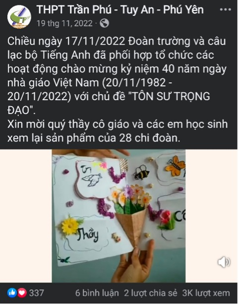
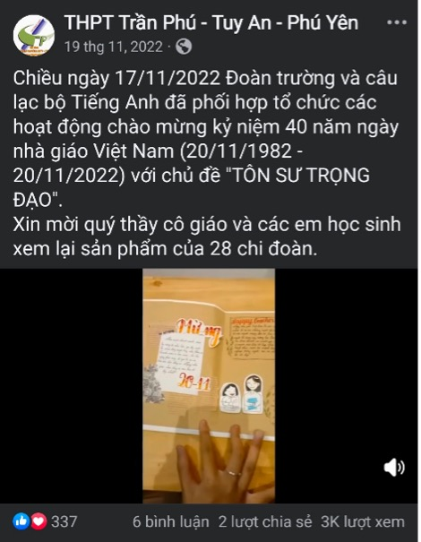
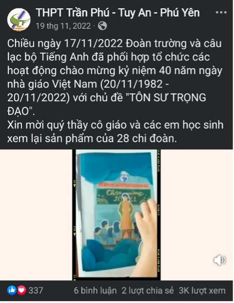
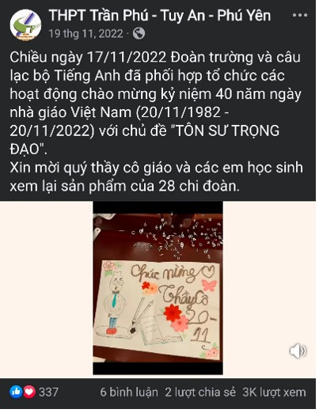
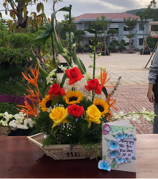
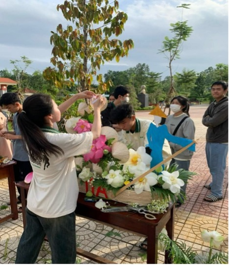
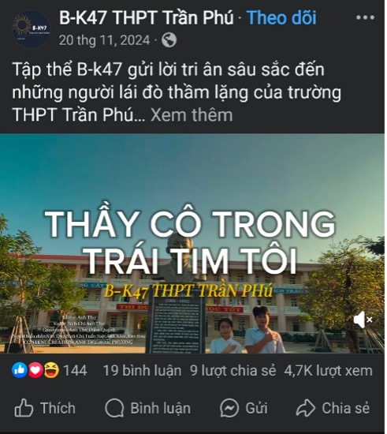
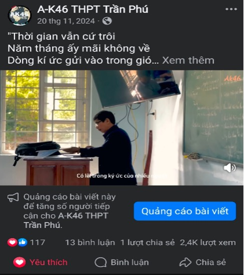
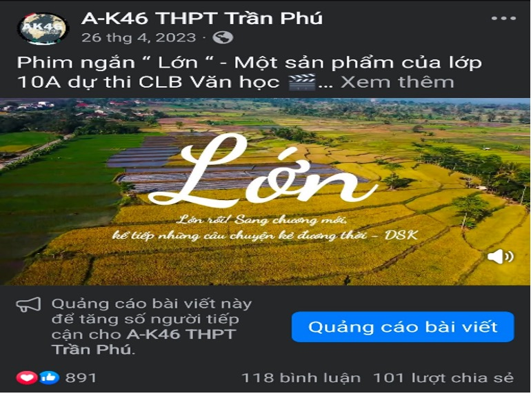
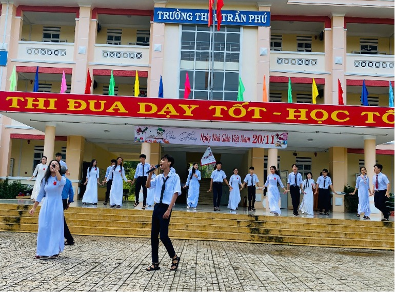

Chào mừng bạn đến với trang Sáng tạo của trường THPT Trần Phú. Chúng tôi hy vọng rằng trang web này sẽ là nguồn thông tin hữu ích và là cầu nối giúp bạn hiểu rõ hơn về những hoạt động học tập, sáng tạo đa dạng và phong phú của trường. Dưới đây là một số hoạt động và thành tích tiêu biểu của trường:
Hoạt động nhân ngày nhà giáo Việt Nam 20-11
Để chào mừng ngày nhà giáo Việt Nam, nhằm thể hiện tinh thần "Tôn sư trọng đạo" cũng như là sân chơi sáng tạo cho các bạn học sinh Đoàn trường đã tổ chức các cuộc thi như:
Cuộc thi thuyết trình tấm thiệp 20/11 là hoạt động mà Đoàn Trường THPT Trần Phú tổ chức cho học sinh nhằm tri ân nhân ngày Nhà Giáo Việt Nam




Cuộc thi cắm hoa tri ân thầy cô giáo được diễn ra vào 20-11-2023


Cuộc thi sáng tạo video ngắn mừng ngày nhà giáo Việt Nam


Ngoài các hoạt động được tổ chức nhân ngày 20/11, Đoàn trường và các CLB còn thường xuyên tổ chức, khuyến khích các bạn học sinh xây dựng các vở kịch, video phim ngắn….

